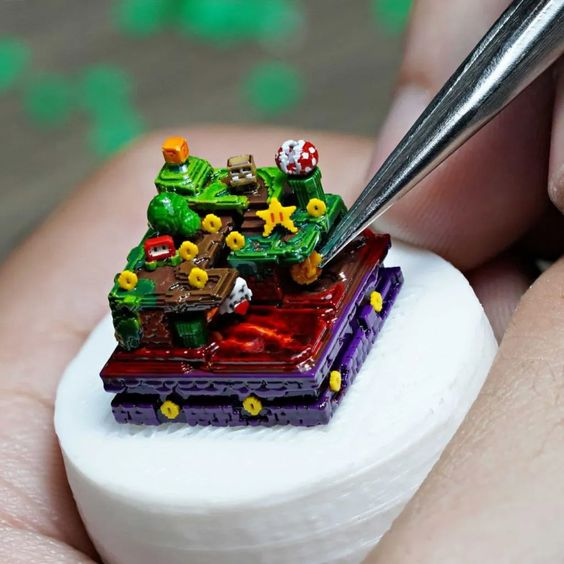

¿Quiénes somos?
KeyCaps-World nació a partir de la necesidad de conseguir información y artículos para nuestro hobby de personalizar teclados. Esta idea surgió en el año 2022 luego de perseguir durante meses el último lanzamiento de Razer, el teclado DeathStalker V2.
Al darnos cuenta de la cantidad de información que se encuentra dispersa por internet y la ausencia de sitios o canales que puedan recopilar y reunir toda la información en un solo lugar, nos vimos con la necesidad de crear el sitio ideal para esto.
Así fue que nació la idea de crear una página web en la que pudiéramos recopilar de forma rápida y eficiente para el usuario, toda la información relacionada al mundo de los teclados personalizados. Desde placas hasta teclas personalizadas hechas a petición.
El mayor desafío fue encontrar la información oficial de las distintas compañías sin dejar de lado los datos o “filtraciones” que se daban por parte de la comunidad. Esto desembocó en un trabajo a tiempo completo por brindar noticias a la altura evitando los “clickbaits” de internet.
Actualmente, gracias al apoyo de muchos de nuestros seguidores y a petición de los mismos, decidimos crear el formulario de contacto para que todos aquellos que contaran con inquietudes más específicas respecto al tipo de teclado que quisieran comprar, pudieran tener el espacio para hablar con profesionales en la materia y de esta manera, invertir su dinero de forma segura, confiando en el resultado final.
¡Mantente al tanto de todo lo nuevo!
No olvides registrar tu correo para recibir semanalmente toda la información que necesitas sobre los teclado personalizados